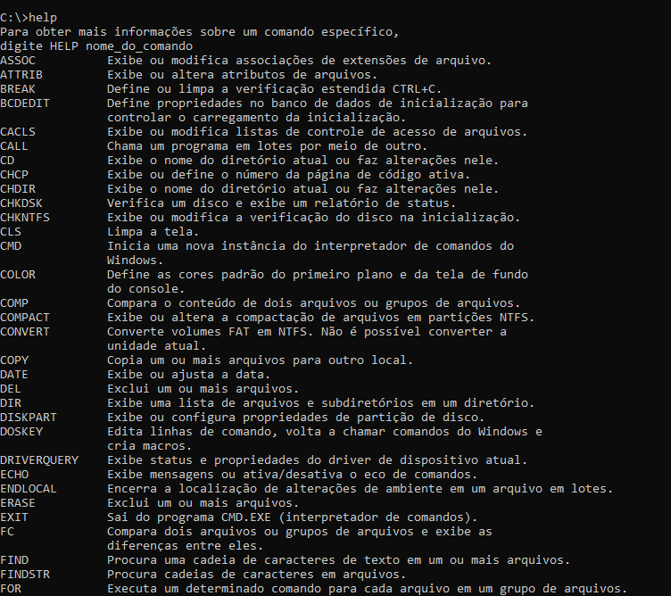

Comandos do CMD
Eis uma foto dos comandos do CMD

(Arraste o mouse na imagem para ampliar)
Também há vários códigos! Aqui está uma lista sobre alguns códigos e o que eles fazem.
dir: Lista os arquivos de uma pasta.
mkdir: Cria uma pasta.
help: Comando de ajuda, para entender um comando específico.
ping: Verifica a conectividade de rede de um domínio em específico na web.
cd: Muda de pasta.
cls: Limpa a tela dos comandos anteriormente digitados.
cipher: Esse comando pode alterar ou exibir a criptografia de pastas em várias partições.
nslookup: Esse comando serve para verificarmos se as configurações do servidor DNS do domínio que temos está correta.
type: Serve para exibir o conteúdo dentro de um arquivo.
pathping: permite listar informações a respeito da rota e dos dispositivos existentes entre o seu computador e dispositivo teste.
echo: Reescreve um texto, sendo no CMD ou em um arquivo.
fc: Compara um arquivo com outro.
ipconfig: Exibe informações referentes à sua internet.
shutdown: Desliga o computador, pode colocar um temporizador escrevendo "shut down -r -t "tempo", sem aspas.
tasklist: Exibe os processos em execução.
taskkill: Encerra um processo em execução forçadamente.
systeminfo: Lista as ações executadas desde que o Sistema Operacional foi instalado.
sfc: Escaneia o computador em procura de falhas, e a fim de reparar.
Existe muitos outros comandos, é possível ver todos eles abrindo o cmd, e degitando "help", listando todos os comandos.